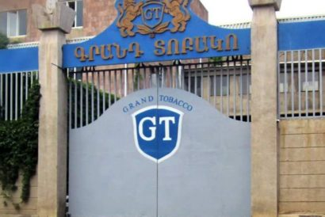
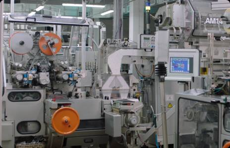
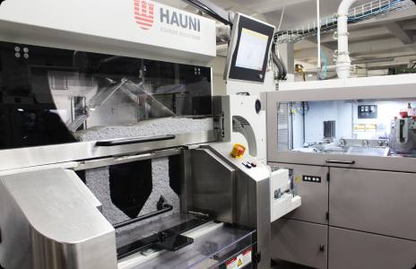
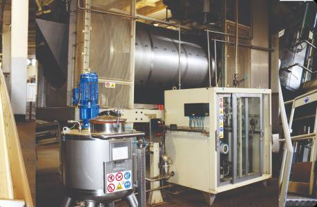
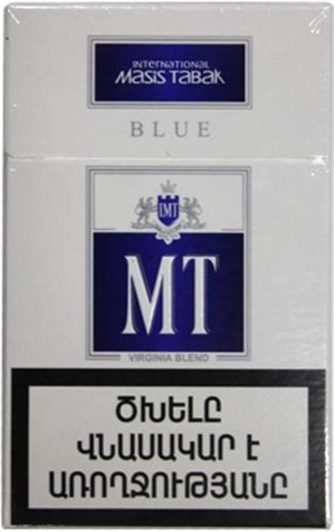
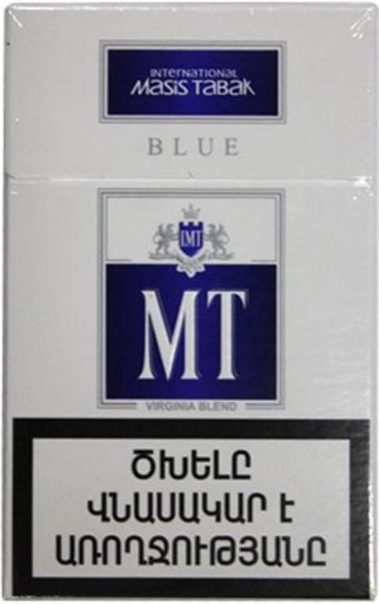

Հրանտ Վարդանյանն աշխատանքային գործունեությունը սկսել է Երևանի ծխախոտի փորձարարական կոմբինատում, որպես ինժեներ-տեխնոլոգ։ 1984 թ.-ից կոմբինատի գլխավոր տնօրենի տեղակալն է եղել։ 1996 թ.-ից սկսել է բիզնես գործունեությունը՝ խթանելով հայրենական արտադրության վերականգմանն ու զարգացմանը։
Հիմնադրել է «Գրանդ Տոբակո», «Գրանդ Քենդի», «Ինթերնեյշնլ Մասիս Տաբակ» և այլ ընկերություններ։ Նրա հիմնադրած ընկերությունների խումբը՝ «Գրանդ Հոլդինգը», հանրապետության առաջին հարկատուն է, առաջինն է պատրաստի արտադրանքի արտահանման ծավալով, աշխատատեղերի քանակով։ Ընկերության հետ համագործակցելու շնորհիվ գյուղատնտեսության ոլորտում ստեղծվել են հազարավոր աշխատատեղեր՝ հատկապես Հայաստանի Հանրապետության սահմանամերձ բնակավայրերում։

1997 թվականին Հրանտ Վարդանյանի կողմից հիմնադրված «Գրանդ Տոբակո»-ն ունի երկարամյա պատմություն, որը սկիզբ է առնում 1924 թվականից: Այդ տարիներին Խորհրդային Հայաստանում հիմնադրվել է «ՀԱՅԾԽԱԽՈՏԱՐԴ» արտադրական միավորումը, որի հիման վրա էլ ստեղծվել է «Գրանդ Տոբակո»-ն: Այդ ժամանակներից ի վեր հայկական ծխախոտը մեծ համբավ է վայելել և գնահատվել նախկին ԱՊՀ բոլոր երկրների ծխողների շրջանում։ Այսօր «Գրանդ Տոբակո»-ն հպարտորեն պահպանում է նախկին «ՀԱՅԾԽԱԽՈՏԱՐԴ» ԱՄ-ի արժանի ժառանգորդի իր համբավը և նույնիսկ գերազանցում է այն իր հզորությամբ և արտադրողականաությամբ:
Նորագույն սարքավորումների և բարձրորակ հումքի շնորհիվ մեր գործարանները թողարկում են հայտնի ապրանքանիշերի լայն տեսականի: Ավելին, ունենալով ֆիլտրերի տեսականու բազմազանություն, ինչպես նաև ավելի քան 20 տեսակի ծխախոտի խառնուրդ՝ «Գրանդ Տոբակո»-ն հաջողությամբ բավարարում է ամենախստապահանջ սպառողների ցանկությունները:
Մեր արտադրանքի բարձր որակը խստորեն վերահսկվում, պահպանվում և շարունակաբար կատարելագործվում է որակի բաժնի կողմից: Որակի վերահսկողությունը մեր ընկերության կարևորագույն ռազմավարություններից մեկն է:
Մենք շարունակաբար ներդրումներ ենք կատարում նոր ապրանքատեսակների մշակման մեջ, կիրառում նորագույն տեխնոլոգիաներ՝ միաժամանակ պահպանելով հին ավանդույթները և փորձելով ծխախոտը պակաս վնասակար դարձնել մեր ծխողների համար։ Այդ իսկ պատճառով մենք արտադրում ենք նիկոտինի և խեժի ցածր պարունակությամբ ծխախոտներ՝ օգտագործելով տարբեր համակցված ֆիլտրեր՝ ակտիվացված ածուխով, գլանակային զտիչներով, ինչպես նաև շատ այլ յուրահատուկ համակցություններով:



 
